False assumptions for the Vehicle Routing Problem
Many companies are faced with the vehicle routing problem, when they need to:
- Deliver/pick up items at multiple locations
- Or execute repairs/maintenance at multiple locations
These companies want to minimize their fuel and time usage, to reduce their costs and ecological footprint.
Sounds easy, right? Just take the shortest route. Unfortunately it’s not that simple… Let’s take a closer look.
Minimize the distance
In Vehicle Routing Problem (VRP), we need to transport items from the warehouse to the customers:
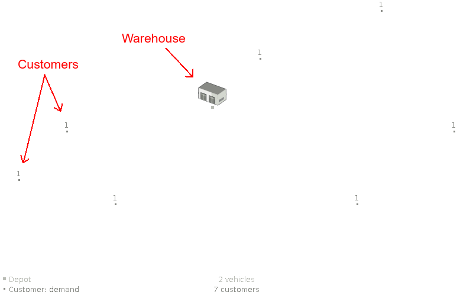
In this case, we have 7 customers across the region and 2 available vehicles stationed at the warehouse.
The shortest route to visit all these customers is this:
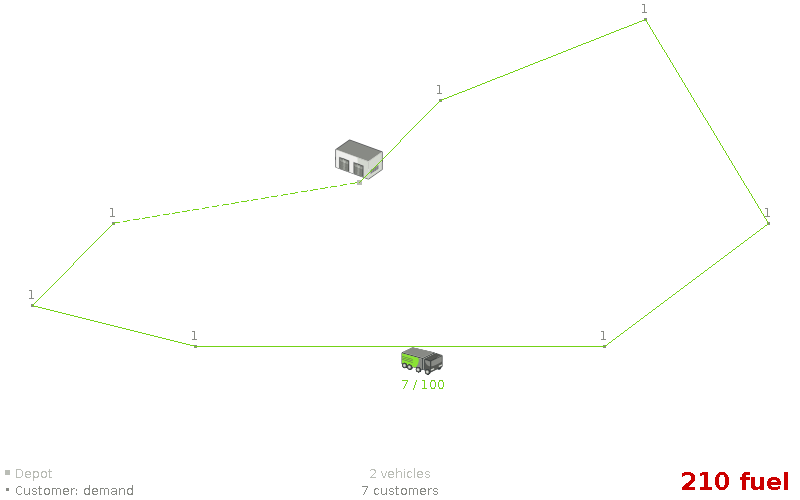
This optimal solution requires 210 fuel (which includes each vehicle driving back to the warehouse).
Notice that we only use 1 vehicle. Let’s continue from that assumption.
Assumption: An optimal VRP route uses only 1 vehicle. (false)
Vehicle capacity
In a real-world delivery/pick up scenario, each customer needs a number of items, but a vehicle’s capacity to transport items is limited.
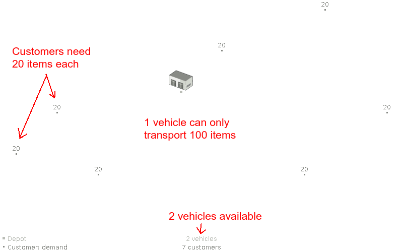
In this case, all 7 customers need 20 items and a vehicle can transport 100 items.
So a single vehicle cannot transport the 140 items of all customers.
We need to use 2 vehicles now:
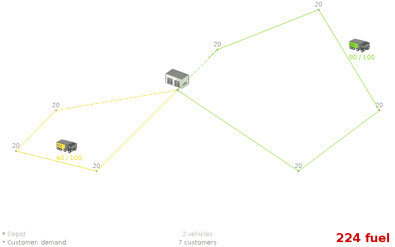
This optimal solution requires 224 fuel, which is – of course – more than the 210 fuel of the previous solution.
The yellow truck transports 60 items and the green one 80 items.
Notice that none of the lines cross. Let’s assume that’s always the case.
Assumption: An optimal VRP route has no crossing lines. (false)
Let’s see what happens when some of the customers require more items than other customers.
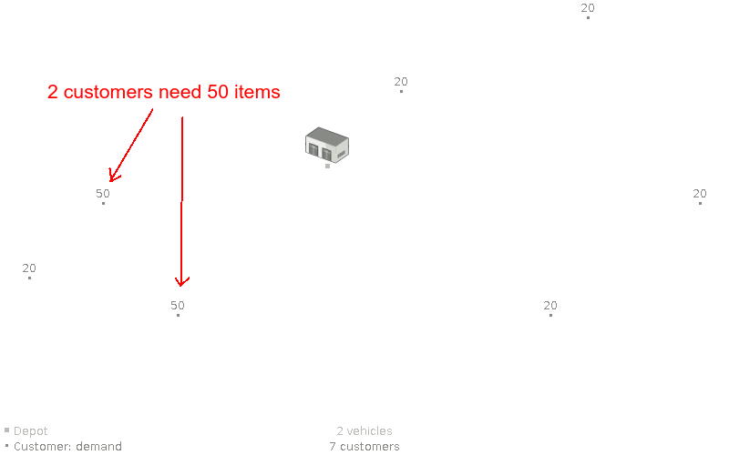
In this case, 2 customers need 50 items and the other 5 still need 20 items.
So the previous solution is infeasible because the yellow truck would need to transport 120 items.
Now the lines do need to cross:
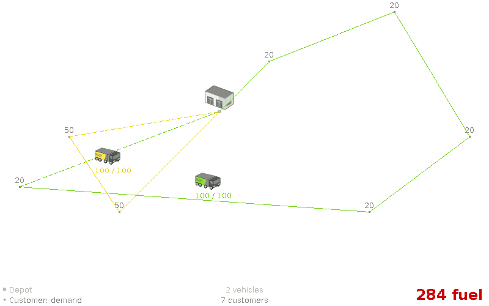
The optimal solution now requires even more fuel: 284. We found a feasible solution with 2 vehicles.
So we don’t seem to need any more vehicles.
Assumption: An optimal, feasible VRP route with n vehicles is still optimal for n+1 vehicles. (false)
Let’s add a 3rd vehicle to disprove that:
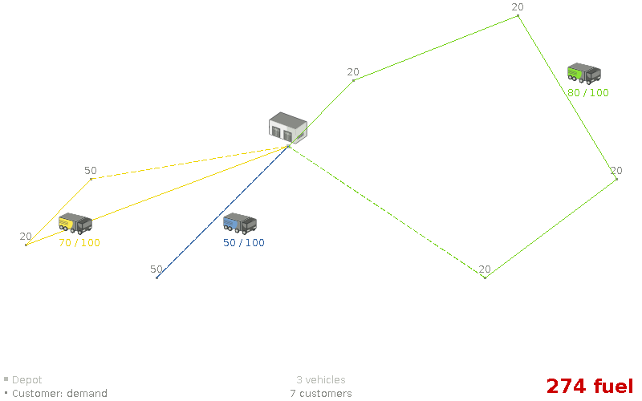
By adding an extra vehicle, the optimal solution now uses less fuel: only 274. This is a paradox: buying more vehicles can reduce expenses.
Notice that in both solutions above, no vehicle crosses its own line.
Assumption: An optimal VRP route has no crossing lines of the same color. (false)
Time Windows
In any real-world scenario, time is of the essence. Items need to be delivered on time, within the time window of each customer.
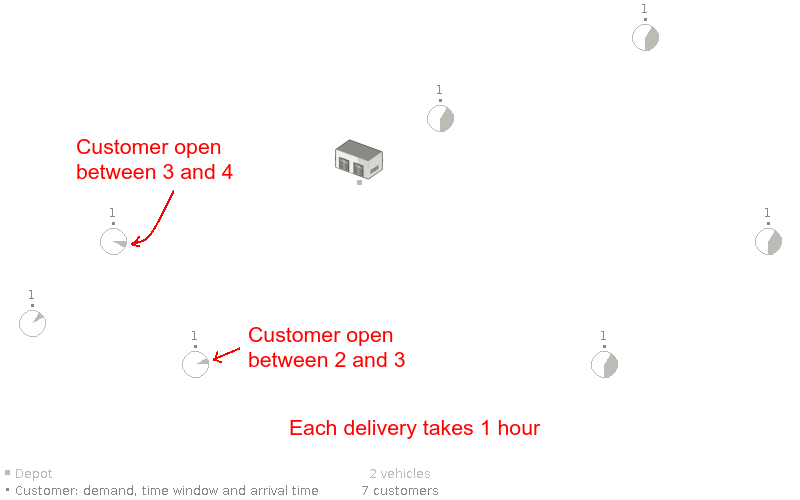
In the case above, a vehicle needs to arrive at the top left customer between 3 and 4 o’clock.
Different customers have different time windows. For example, all 4 customers on the right are flexible:
they are available between 1 and 6 o’clock. Additionally, each delivery/pick up/repair at a customer takes 1 hour to complete.
In the optimal solution, the yellow truck does cross its own line now:
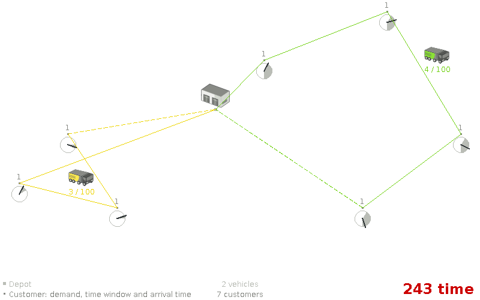
In the optimal solution, the yellow truck arrives at the most left customer at 1 o’clock. An hour later it leaves for the bottom left customer at which it arrives at 2:20 (because driving takes some 20 minutes). Again an hour later it departs and arrives at its 3rd customer at 3:40.
Notice how the time windows pretty much dictate the route, especially on the left side.
Assumption: We can focus on time windows before focusing on capacity (or vice versa). (false)
Let’s see what happens if the time windowed customers also need a number of items:
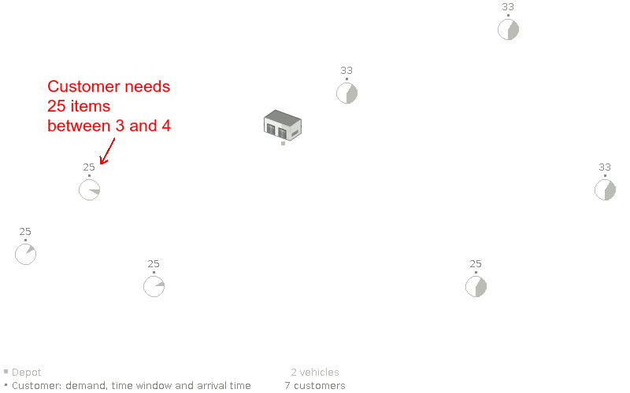
Given these requirements, we need to focus on the capacity and the time windows in parallel:
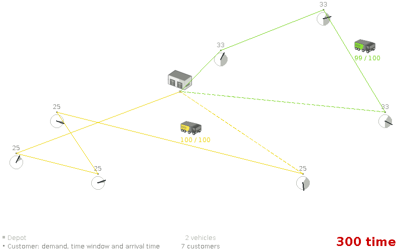
The optimal solution now puts the bottom right customer in the yellow truck, because there was no more room in the green truck.
Conclusion
In a real-world vehicle routing problem, many assumptions fail.
Finding a good solution is hard: there are no short-cuts.
We need to be able to optimize without making assumptions.
Yet, we cannot iterate through all possible states in a brute force manner either – even on relatively small problems – because of hardware limitations.
So we need good, flexible algorithms – such as the heuristics and metaheuristics implemented in OptaPlanner (Open Source, Java) – to solve bigger cases:
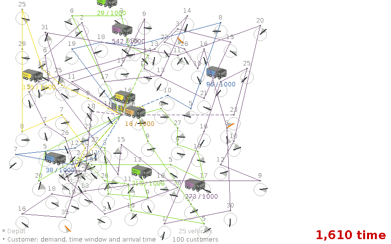
All screenshots are taken from the OptaPlanner vehicle routing example.
")